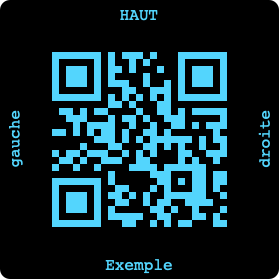
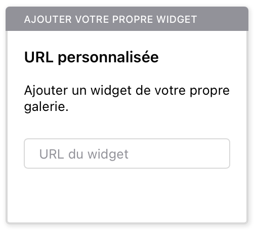

Il est possible de personnaliser l'étiquette en choisissant :
L'orientation des textes et la taille de la quiet zone (zone vierge encadrant le QR code de même couleur que le fond) sont fixes.

Ajouter le widget en ajoutant une vue personnalisée ; choisir le widget URL personnalisée et saisir l'ULR suivante :
https://github.io/.../releases/latest

| Colonne | Type | Obligatoire | Description |
|---|---|---|---|
label |
Pièce jointe | Oui | Image de l'étiquette |
val |
Texte | Oui | Texte encodé dans le QR code |
filename |
Texte | Non | Nom (sans extension) sous lequel sera enregistrée l'étiquette |
top |
Texte | Non | Texte situé au-dessus du QR code |
right |
Texte | Non | Texte situé à droite du QR code |
bottom |
Texte | Non | Texte situé sous le QR code |
left |
Texte | Non | Texte situé à gauche du QR code |
validity |
Booléen | Non | Validité de l'étiquette déterminée par votre application |
trigger |
Booléen | Non | Génération d'une nouvelle valeur pour val |
editable |
Booléen | Non | Affichage de mise à jour des étiquettes |
valfilenameNom (complété par .png) sous lequel sera enregistré le fichier
graphique de l'étiquette.
En liant le nom de fichier et val, vous pouvez estimer la validité
de l'étiquette et alimenter la colonne validity.
top, right, bottom, leftTextes affichés sur chacun des côtés du QR code.
validityEstimation par votre application de la validité de l'étiquette courante, basée par exemple sur le nom du fichier. Cela permet à utilisateur de filtrer sur cette colonne et de procéder à la génération d'une nouvelle étiquette.
triggerÉventuelle colonne booléenne dont la mise à true génère une nouvelle valeur pour val.
editableSi true, on affiche les boutons permettant d'enregistrer et d'actualiser l'étiquette.